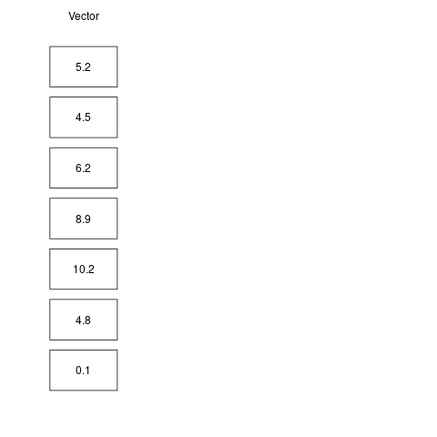
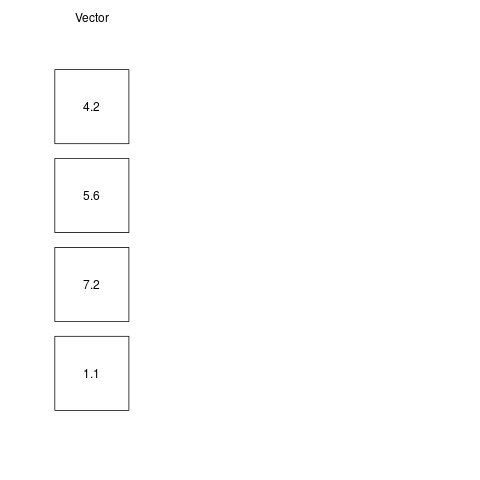

5 + 3 #addition
5 - 3 #subtraction
5 / 3 #division
5 / 0
5 * 3 #multiplication
5 ^ 3 #exponentiation
sqrt(4) #square root
(5 + 5) / (3 + 1) #parenthesis
9 %% 2 #modulo
9 %/% 2 #integer division
log(2) #natural logarithim
exp(2) #exponentBasics of R Programming
Arithmetic operations and assignment
R allows you to perform every basic mathematical operation, so it can simply be used as a calculator. Below, you can see several examples.
All the operations performed above generate some output, which is printed to the R console. Most of the time, however, it is useful to store the outputs of the operations we perform, so that they can be accessed repeatedly. To do that, we can store values in variables, which can be viewed and manipulated by referencing their names. Values are assigned to variables using the <-operator. While = may seem equivalent, for more advanced reasons <- is used whenever assigning a value. If you’re interested in the technical details behind it, you can check out this Stack Overflow post.
x <- 5
my_number <- 4.2
result <- 5 + 6 * 7 - 8You can name a variable anything you like, however it cannot:
- start with a number
- have any whitespaces
- include mathemtical operators in it’s name, such as *, /, ^, %, etc. - it’s best to avoid any special characters except for “” and “.” to separate words if necessary, for example
my_variableormy.variable. While you can see the dot being used in variable names by many users, technically using is a better practice, as the dot has an additional special meaning attached to it.
It is also useful to avoid naming variables using names that are already defined in R to be something else - however, you will learn the avoid this as you progress in the course.
Keep in mind, that while variable names are arbitrary, it’s good to keep them concise and informative, especially if you have to present your code to someone or to come back to your own work after a long period of time.
Assigning the values does not produce any output. To access the values assigned to a variable, you have to call its name directly in the script or the console. You can use this to perform mathematical operations on the objects as well.
x <- 5
y <- 7
x
y
x + y
z <- x * y
zFinally, you can always assign a new value to the same name. However this implies that the old value will be discarded. It can be useful when you know that you won’t need to access the value again. For example, it’s a common practice to modify a variable already defined such that x <- x + 5. This simply means “add 5 to x and store it in x”.
x <- 5
x[1] 5x <- 7
x[1] 7x <- x + 2Vectors
While the above operations are useful, the true power of R comes from the so-called vectorization of mathematical (and other) operations. A vector in R terminology is just a fancy word for an ordered sequence of numbers or a “column” in an Excel sheet. Vectors are also commonly referred to as variables - in the context of this course, these terms will be used interchangably. Vectors are created by the combine function c(). A function is simply an expression followed by parentheses which takes some values as input and generates other values as output. Vectors are assigned to names the same way as numbers. In fact, a number in R is equivalent to a vector of length 1. Below you can see some examples of vectors being created.
x <- c(1, 4, 5, 6)
x[1] 1 4 5 6z <- c(5 / 2, 7 * 8, 2 + 1)
z[1] 2.5 56.0 3.0v <- c(x, z)
v[1] 1.0 4.0 5.0 6.0 2.5 56.0 3.0R also offers a shorthand for creating sequences of integers between two values, for example:
1:10 [1] 1 2 3 4 5 6 7 8 9 10x <- 15:5
x [1] 15 14 13 12 11 10 9 8 7 6 5It is also possible to create multiple repetitions of a given vector by using the rep() function, which takes a vector as its first argument and the number of required repetitions as the second argument.
rep(5, 3) #repreat the number 5 3 times[1] 5 5 5a <- c(5, 6, 7)
b <- rep(a, 4) #repeat vector a 4 times and assign it to b
b [1] 5 6 7 5 6 7 5 6 7 5 6 7The length of a vector refers to the number of elements it contains. It can be examined using the length() function:
a <- 1:5
length(a)[1] 5Vectorization of an operation refers to the fact that an operation are performed on vectors element-wise. This is true for majority of R operations. For example, adding the vectors [1 2 3] and [5 6 7] will produce the vector [6 8 10]. If an operation is performed between a vector and a single number (or a scalar, using more specific terminology), it is applied to each pair of the elements, such that [1 1 1] multiplied by 2 would yield [2 2 2]. Below you can see some examples of vectors in action.
x <- c(1, 2, 3, 2)
y <- c(5, 6, 7, 4)
x + y[1] 6 8 10 6x - y[1] -4 -4 -4 -2x ^ y[1] 1 64 2187 16z <- 5 * x - 2 * y
z[1] -5 -2 1 2In case of performing operations on a vector and a scalar (one number), the operation is applied to each element of the vector. For example:
x <- c(1, 2, 3, 2)
x * 3[1] 3 6 9 6
While it was mentioned earlier that vectors can be thought of as ordered sequences of numbers, they can also contain text. Such vectors are callled “character vectors” and are constructed similarily to numeric vectors. Each text has to be enquoted in “” to denote that it should not be interpreted as a variable name or a function.
a <- "Hello world"
a[1] "Hello world"words <- c("This", "Is", "A", "Sequence", "Of", "Words")
words[1] "This" "Is" "A" "Sequence" "Of" "Words" Mathematical operations such as addition or division cannot be performed on character vectors for obvious reasons and will produce an error if you attempt them. However, you can combine words and numbers into one vector - however, they will all be treated as if they were text, so the number 5 in the example below gets converted to character “5”.
mixed <- c(5, "something", "something else")
mixed[1] "5" "something" "something else"The paste function is a useful for dealing with character vectors - it can be thought of as an equivalent of addition operation for text.
name <- "John"
surname <- "Doe"
paste(name, surname)[1] "John Doe"names <- c("John","Jane","Thomas")
surnames <- c("Doe","Smith","Kowalsky")
paste(names, surnames)[1] "John Doe" "Jane Smith" "Thomas Kowalsky"Coercion
Another important topic when dealing with vectors is coercion. This refers to forcing one vector type to become another using the as functions. For example, we use as.character to force an R object into a character vector, or as.numeric to force it into a numeric vector:
numbers_char <- c("5","6","7")
numbers_char[1] "5" "6" "7"numbers <- as.numeric(numbers_char)
numbers[1] 5 6 7numbers <- c(10, 123, 12)
as.character(numbers)[1] "10" "123" "12" Note that this will not always work, as in many cases elements of one vector type cannot be interpreted as another. For example:
nums <- c("1","2","three")
as.numeric(nums)[1] 1 2 NAIn this case, R still returns the output, however the third element of the nums vector is turned into an NA value. NA is shorthand for Not Available - it’s a constant that R uses to deal with missing values. This is indicated by the warning printed by R to the console. Missing values will be covered in more detail in the next chapter.
Logical Values and Operators
Another crucial type of operations in R are logical operations, also known as boolean. They are used to evaluate the truth value of logical statements such as variable “A is equal to variable B” or variable A is a numeric vector. Whenever the queried statement is True, they return TRUE and FALSE otherwise. Below you can see some simple examples using the equality operator == - the double equality means that we are checking whether two values are equal, rather than assigning one to another.
a <- 5
a == 5[1] TRUEa == 3[1] FALSEa - 2 == 3[1] TRUE"John" == "James"[1] FALSEThe ! operator is used for negation, so !TRUE results in FALSE and vice versa. Accordingly, != is used to denote ‘not equals to’.
!TRUE[1] FALSE!FALSE[1] TRUE5 != 6[1] TRUE"John" != "James"[1] TRUELogical operations can also be used to compare values, by using a < b for “a is less than b”, a <= b for “a is less or equal to b” and vice versa.
x <- 5
y <- 3
x > y[1] TRUEx - 2 < y[1] FALSEx - 2 <= y[1] TRUEFinally, the & (logical “and”) and | (logical “or”) operators are designed to combine TRUE/FALSE values. So, if you put & between two logical values, it will yield TRUE if and only if both values are TRUE. | on the other hand will return TRUE if any of the values is TRUE
TRUE & TRUE[1] TRUETRUE & FALSE[1] FALSETRUE | FALSE[1] TRUEFALSE | FALSE[1] FALSE(5 + 1 == 6) | (2 + 2 == 5)[1] TRUE(5 + 1 == 6) & (2 * 2 == 10)[1] FALSEThe logical values are also often used to verify whether we are dealing with a certain R type - for example to check whether a value is a character or numeric. This is achieved by using the is functions, such as is.numeric or is.character.
numbers <- c(5, 6, 7)
is.vector(numbers)[1] TRUEis.numeric(numbers)[1] TRUEis.character(numbers)[1] FALSEwords <- c("Word","Word")
is.numeric(words)[1] FALSEis.character(words)[1] TRUEAs with numbers and characters, the logical values also form their special types of vectors and can be used to perform element-wise operations.
a <- c(TRUE, FALSE, FALSE)
b <- c(TRUE, TRUE, TRUE)
a & b[1] TRUE FALSE FALSEThey can also be used to find whether each value in a numeric or character vector is equal to another.
x <- c(5, 6, 7, 8)
x == 5[1] TRUE FALSE FALSE FALSEy <- c("John", "James", "Thomas")
z <- c("John","James","Robert")
z == y[1] TRUE TRUE FALSEThe boolean vectors can be also thought of as a special case of numeric vectors consisting only of 0s and 1s, where 0 corresponds with FALSE and 1 with TRUE value. This can be easily seen in the example below:
TRUE + TRUE + TRUE[1] 3Indexing
While a very large volume of data can be stored in one vector, we often may want to access only a specific element of it, or a fraction of the elements. An index of a vector, is simply an integer corresponding to the position of a value in a the vector. So, a vector with N values has integers ranging from 1 to N. For example, in vector c(5, 10, 3, 2), the index of 5 is 1, the index of 10 is 2, the index of 3 is 3, etc. Indexing is an operation of accessing a vector’s elemet at a given index, using the square brackets []. For example, a[5] means “get the fifth element from vector a”.
a <- c(5.2, 4.5, 6.2, 8.9, 10.2, 4.8, 0.1)
a[5][1] 10.2
Indexing can also be used to replace values at a given position in a vector. In the example below, we replace the first element of a with the number 1000.
a[1] <- 1000
a [1] 1000.0 4.5 6.2 8.9 10.2 4.8 0.1Indexing can also be done using another vector of numeric values. For example we may want to get the first, second and fifth elements of a given vector, or a sequence of elements between 1 and 4.
a <- c(5.2, 4.5, 6.2, 8.9, 10.2, 4.8, 0.1)
a[c(1, 3, 5)][1] 5.2 6.2 10.2#equivalent to:
b <- c(1, 3, 5)
a[b][1] 5.2 6.2 10.2#can also be done for a sequence
a[1:5][1] 5.2 4.5 6.2 8.9 10.2
Indexing is even more powerful in conjunction with logical operations. This is because, a logical vector can be used to index any vector - such indexing operations returns all the values of the indexed vector where the corresponding indexing logical vector is TRUE. This may sound confusing at first, but is actually quite straightforward, as seen below:
x <- c(4.2, 5.6, 7.2, 1.1)
index <- c(FALSE, TRUE, TRUE, FALSE) #only second and third elements are TRUE
x[index] #returns only second and third elements of the x vector[1] 5.6 7.2
For example, imagine vector gdp vector that holds the GDP per capita values for a list of countries and country vector that holds the corresponding country names. Logical indexing may be very useful, if we want to get names of countries with GDP per capita above or below a certain value:
gdp <- c(69687, 67037, 65111, 52367, 41030, 32946, 29961)
countries <- c("Qatar", "Iceland", "USA",
"Germany", "United Kingdom", "Italy", "Spain")
countries[gdp > 40000][1] "Qatar" "Iceland" "USA" "Germany"
[5] "United Kingdom"We can also use this with multiple critertia, for example index countries with GDP higher than 40000 USD and the UN Human Development Index higher than 0.9.
hdi <- c(0.848, 0.938, 0.920, 0.939, 0.920, 0.883, 0.893)
countries[gdp > 40000 & hdi > 0.9][1] "Iceland" "USA" "Germany" "United Kingdom"Sorting
On many occasions, it’s useful to sort a vector to see it’s highest or lowest values. This can be achieved by using the sort function.
numbers <- c(8, 4, 5, 10, 2, 123)
sort(numbers)[1] 2 4 5 8 10 123By default, R sorts vectors in an increasing order (in case of character vectors, this translates to A-Z sorting). However, the sort function has an additional argument, decreasing, that can be used to specify whether the sorting should be done in the decreasing order. The argument is a default argument, i.e. takes a certain value unless specified otherwise by the user. This is common in R and a lot of functions allow customizing the way they work by specifying additional arguments, which have a default value to avoid the effort of specifying them every time a certain function is used. Such default arguments can easily be recognized in R documentation. In case of sort, the Usage section reads sort(x, decreasing = FALSE, ...). This means, that the function takes x (the vector to be sorted) as its main argument, and decreasing, which defaults to FALSE. The argument decreasing is also logical - can only take TRUE or FALSE values - this is a common argument type if a certain operation can be performed in two different ways of with an additional element that may not always be desired.
sort(numbers, decreasing = TRUE)[1] 123 10 8 5 4 2While sorting a vector may be useful in certain circumstances, a lot of the time we may actually need to sort the values by another vector. For example, let’s assume that we have a vector of names and corresponding ages, and we want to see the names ordered by the age.
names <- c("Thomas","Peter","Ahmed","Emily","Helena")
age <- c(50, 10, 20, 15, 40)This can be achieved using the order function, which returns indices of the vector needed to re-arrange it into sorted order.
order(age)[1] 2 4 3 5 1In this case, the age of 10 (index 2) should go to the first place, 15 (index 4) to the second position, 20 (index 3) to the third, etc. Note that the two following operations are equivalent:
sort(age)[1] 10 15 20 40 50age[order(age)][1] 10 15 20 40 50The first one tells R to simply sort the values of age, whereas the second to index age by the indices of age in a sorted order. To get the names sorted by age, we can use:
names[order(age)][1] "Peter" "Emily" "Ahmed" "Helena" "Thomas"names[order(age, decreasing = TRUE)] #decreasing order[1] "Thomas" "Helena" "Ahmed" "Emily" "Peter" Finally, the rank function returns the sample ranks of a given vector, i.e. their relative position in a sorted list. Note that this is different from order. rank returns the position corresponding to each value in a sorted order, whereas order returns indices of the original vector needed to put it in a sorted order.
age[1] 50 10 20 15 40rank(age)[1] 5 1 3 2 4order(age)[1] 2 4 3 5 1So in our example, the first value of the vector returned by rank(age) is 5, since the first value of the age vector is 50, which would be last in the numeric order. The first value of the vector returned by order(age) is 2 - this is because, the 2nd element of age (i.e. the value of 10) should go to the first position for the vector to me correctly ordered.
Finally, logical indices can be converted into numerical values using the which function. It takes a logical vector as input and returns the indices at which the value of the vector is TRUE. You can see an example below:
numbers <- 1:10
numbers > 5 [1] FALSE FALSE FALSE FALSE FALSE TRUE TRUE TRUE TRUE TRUEwhich(numbers > 5)[1] 6 7 8 9 10This function is helpful in some certain situations, however it’s a bad practice to apply it in cases when logical indexing is sufficient, for example:
numbers[numbers > 5][1] 6 7 8 9 10is sufficient, and there’s no need to use:
numbers[which(numbers > 5)][1] 6 7 8 9 10One of the situations in which the use of which function can be preferred to simple logical indexing is when our vector contains missing values (discussed in the next chapter. For example, the first expression will return NA.
numbers <- c(2, 4, 1, 10, 20, NA)
numbers[numbers > 5][1] 10 20 NAThis is because, running logical comparisons such as numbers > 5 always returns missing values, along the TRUE and FALSE logical values. This should make sense, since NA is not comparable to any number.
numbers > 5[1] FALSE FALSE FALSE TRUE TRUE NAwhich skips the NA values, only returning the indices of values that are TRUE.
which(numbers > 5)[1] 4 5As a result, we can perform indexing on variable with missing values using which:
numbers[which(numbers > 5)][1] 10 20Two cousins of the which function are which.max and which.min, which return the index of the highest and lowest value in a vector. So, coming back to the ages example, we can retrieve the name of the person with highest and lowest age using respectively:
names[which.max(age)][1] "Thomas"names[which.min(age)][1] "Peter"Summary
Vectors are simply ordered sequences of elements that represent some concept we analyze - for example, we can have a vector of country names and a vector of corresponding GDP per capita amounts. They are also known as variables.
Vectorization simply means, that if we add (or perform any other operation) two vectors toegether/an numeric element to a vector, it will be done element-wise.
Functions in R are objects which take some values as inputs and produce other values as outputs.
Logical values are the result of comparing vectors using logical operators (such as
==,<,>). They can be eitherTRUEif the logical statment is true (e.g.2 + 2 == 4) orFALSEotherwise (e.g.7 > 10).Indexing means retrieving vector elements by their numeric index (i.e. their position in the vector). It can also be done using logical values - in this case, all elements corresponding to
TRUEare retrieved.Sorting refers to putting elements of a vector into numeric or alphabetial order. It can be done either directly on a vector using
sort()or in reference to another vector usingorder().rank()allows to retrieve the relative rank of an item (i.e. position which it would have if the vector was sorted).
Exercises
- The code below creates three vectors corresponding with individual’s name, birth year and birth month.
year <- c(1976, 1974, 1973, 1991, 1972, 1954,
1985, 1980, 1994, 1970, 1988, 1951,
1957, 1966, 1968, 1963, 1999, 1977,
1984, 1998)
month <- c("February", "February", "April",
"August", "September", "November",
"October", "December", "May", "March",
"June", "November", "October", "May",
"July", "August", "March", "July",
"October", "January")
name <- c("Thomas", "Natalie", "James",
"Gina", "Cate", "Rob", "Frank",
"Tyle", "Marshall", "Ted", "Emily",
"Brandon", "Yasmin", "Tina",
"Phillip", "Natasha", "Joan",
"Jack", "Alice", "Barney")Create a vector named birthdays which contains names, birth months and birth years of each person. For example, the first one should look like
"Thomas, February 1976.Filter out the people who were born in October after the year 1980. Store their names in vector named
oct1980
- Given the vector x <- c(5, 40, 15, 10, 11). What would output would you expect from the following functions?
sort(x)order(x)rank(x)
Use R to verify your answers.
- Vector
countrycontains the names of 6 countries and the following 4 vectors contain the countries’ correspondig Expected Years of Schooling,eys, Mean Years of Schoolingmys, Life Expectancy at Birthlexpand Per capita Gross National Incomegni.
country <- c("Argentina", "Georgia",
"Mexico", "Philippines",
"Turkey", "Ukraine")
eys <- c(17.6, 15.4, 14.3, 12.7, 16.4, 15.1)
mys <- c(10.6, 12.8, 8.6, 9.4, 7.7, 11.3)
lexp <- c(76.5, 73.6, 75, 71.1, 77.4, 72)
gni <- c(17611, 9570, 17628, 9540, 24905, 7994)The United Nations Human Development Index (HDI) is given by the following formula:
HDI = \(\sqrt[3]{\text{Life Expectancy Index} * \text{Education Index} * \text{Income Index}}\), where
Life Expectancy Index = \(\frac{\text{Life Expectancy}-20}{85-20}\)
Education Index = \(\frac{\text{Mean Years of Schooling Index} + \text{Expected Years of Schooling Index}}{2}\)
Mean Years of Schooling Index = \(\frac{\text{Mean Years of Schooling}}{15}\)
Expected Years of Schooling Index = \(\frac{\text{Expected Years of Schooling}}{18}\)
Income Index = \(\frac{ln(GNIpc) - ln(100)}{ln(75,000) - ln(100)}\)
Write R code to answer the following questions:
Calculate the HDI for each of the countries.
Store country names with HDI lower than 0.75 in vector
coutry_lhdi. Print the names of the countries.Store country names with HDI lower than 0.8 and GNI higher than $10000 in vector
country_hlghPrint names of the countries with HDI at least as high as HDI of Turkey (excluding Turkey).
Print names of the countries in which the Expected Years of Schooling index is higher than the Life Expectancy Index.
- The data below contains the records of UK General Election turnout between 1964 and 2019.
turnout <- c(0.771, 0.758, 0.72, 0.788, 0.728, 0.76, 0.727, 0.753, 0.777, 0.714, 0.594, 0.614, 0.651, 0.661, 0.687, 0.673)
year <- c(1964, 1966, 1970, 1974, 1974, 1979, 1983, 1987, 1992, 1997, 2001, 2005, 2010, 2015, 2017, 2019)
party <- c("Labour", "Labour", "Conservative", "Labour",
"Labour", "Labour", "Conservative",
"Conservative", "Conservative",
"Conservative", "Labour", "Labour", "Labour",
"Conservative", "Conservative",
"Conservative")Write code to answer the following questions:
Which years had the turnout higher than 70/%?
Which parties won in elections with turnout below 0.65?
Obtain the years in which the turnout was the lowest and the highest and store them in vector
year_minmax.Store the names of the parties which won in the 3 elections with the highest turnout in vector
top3